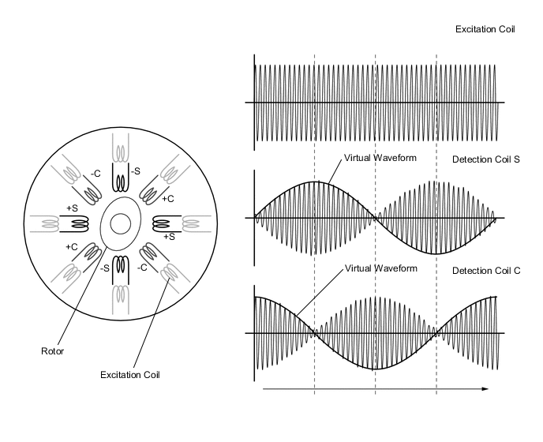
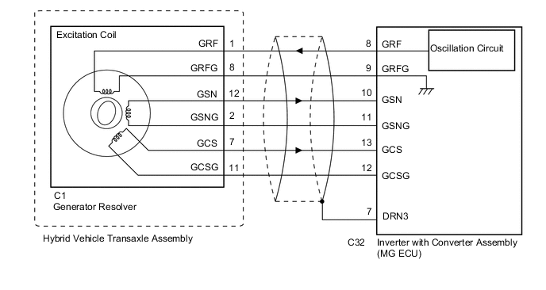
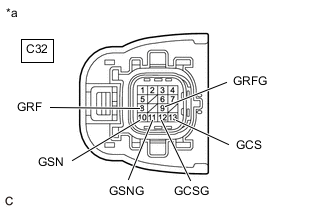
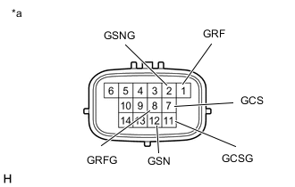

HYBRID CONTROL SYSTEM Generator Resolver Circuit
DESCRIPTION
The cause of this malfunction may be the generator resolver.
Check the generator resolver internal resistance and connection condition from the inverter to the resolver.
| Area | Inspection |
|---|---|
| Wire harness and connector between the inverter and generator resolver | Check for short circuit between wire harness and +B side. |
| Resolver, wire harness, connector | Check the resolver wire harness internal resistance, body ground resistance, and connector connection condition. |
| Wire harness | Check for open or short circuit in wire harness. |
SYSTEM DESCRIPTION
A resolver is a sensor that is used to detect the position of the magnetic poles of the rotor of a generator. Knowing the position of the poles is indispensable for ensuring precise control of the generator (MG1).
Each resolver contains a stator that has an excitation coil and 2 detection coils (S, C). The gap between the stator and rotor changes as the rotor turns because the rotor is oval shaped. An alternating current with a predetermined frequency flows through the excitation coil, and detection coils S and C output alternating currents in accordance with the sensor rotor position.
The MG ECU, which is built into the inverter with converter assembly, detects the absolute position of the rotor according to the phases of detection coils S and C and the heights of their waveforms. Furthermore, the CPU calculates the amount of change in the position within a predetermined length of time, in order to use the resolver as a revolution speed sensor.
The MG ECU monitors signals output from the generator resolver and detects malfunctions.

WIRING DIAGRAM

CAUTION / NOTICE / HINT
This step is referenced from the procedures for each DTC.
If the inspection results below are normal, perform the next procedure for the referenced DTC.
CAUTION:
-

-
Before the following operations are conducted, take precautions to prevent electric shock by turning the power switch off, wearing insulated gloves, and removing the service plug grip from HV battery.
-
Inspecting the high-voltage system
-
Disconnecting the low voltage connector of the inverter with converter assembly
-
Disconnecting the low voltage connector of the HV battery
-
Disconnecting the low voltage connector of the electric vehicle charger assembly
-
Disconnecting the low voltage connector of the solar energy control unit
-

To prevent electric shock, make sure to remove the service plug grip to cut off the high voltage circuit before servicing the vehicle.
-

After removing the service plug grip from the HV battery, put it in your pocket to prevent other technicians from accidentally reconnecting it while you are working on the high-voltage system.
-

*a Without waiting for 10 minutes After removing the service plug grip, wait for at least 10 minutes before touching any of the high-voltage connectors or terminals. After waiting for 10 minutes, check the voltage at the terminals in the inspection point in the inverter with converter assembly. The voltage should be 0 V before beginning work.
Tech Tips
Waiting for at least 10 minutes is required to discharge the high-voltage capacitor inside the inverter with converter assembly, the electric vehicle charger assembly and the solar energy control unit.
Note
After turning the power switch off, waiting time may be required before disconnecting the cable from the negative (-) auxiliary battery terminal. Therefore, make sure to read the disconnecting the cable from the negative (-) auxiliary battery terminal notices before proceeding with work.
Tech Tips
-
If the problem symptom cannot be reproduced, performing a road test on a road on which the vehicle tends to vibrate will make it easier to reproduce the symptom.
-
If the resolver is malfunctioning, the vehicle may not drive smoothly.
-
When inspecting the connectors, if it is difficult to judge if a connector was disconnected, deformed or improperly secured, disconnect and reconnect the connector and then check for DTCs again. Check if the same DTC is output. If the same DTC is not output, improper connection of connectors is suspected.
-
As a malfunction detection threshold may be exceeded when performing the vibration or heat connector inspections, make sure to perform the following inspection to check that the DTC was not stored due to the malfunction of a part.
PROCEDURE
-
CHECK HARNESS AND CONNECTOR (INVERTER WITH CONVERTER ASSEMBLY - GENERATOR RESOLVER)
CAUTION:
Be sure to wear insulated gloves.
-
Check that the service plug grip is not installed.
Note
After removing the service plug grip, do not turn the power switch on (READY), unless instructed by the repair manual because this may cause a malfunction.
-
Disconnect the C32 inverter with converter assembly connector.
-
Connect the cable to the negative (-) auxiliary battery terminal.
-
Turn the power switch on (IG).
-

*a Front view of wire harness connector
(to Inverter with Converter Assembly)
Measure the voltage according to the value(s) in the table below.
Standard Voltage Tester Connection Condition Specified Condition C32-8 (GRF) - Body ground Power switch on (IG) Below 1 V C32-9 (GRFG) - Body ground Power switch on (IG) Below 1 V C32-10 (GSN) - Body ground Power switch on (IG) Below 1 V C32-11 (GSNG) - Body ground Power switch on (IG) Below 1 V C32-13 (GCS) - Body ground Power switch on (IG) Below 1 V C32-12 (GCSG) - Body ground Power switch on (IG) Below 1 V Note
Turning the power switch on (IG) with the inverter with converter assembly disconnected causes other DTCs to be stored. Clear the DTCs after performing this inspection.
-
Turn the power switch off.
-
Disconnect the cable from the negative (-) auxiliary battery terminal and wait for 2 minutes or more.
-
Reconnect the C32 inverter with converter assembly connector.
Result Proceed to OK NG
NG 
REPAIR OR REPLACE HARNESS OR CONNECTOR
OK 
-
-
CHECK GENERATOR RESOLVER
CAUTION:
Be sure to wear insulated gloves.
-
Check that the service plug grip is not installed.
Note
After removing the service plug grip, do not turn the power switch on (READY), unless instructed by the repair manual because this may cause a malfunction.
-
Disconnect the C32 inverter with converter assembly connector.
-
*a Front view of wire harness connector
(to Inverter with Converter Assembly)
Measure the resistance according to the value(s) in the table below.
Standard Resistance (Check for Open) Tester Connection Condition Specified Condition C32-8 (GRF) - C32-9 (GRFG) Power switch off 8.9 to 14.8 Ω C32-10 (GSN) - C32-11 (GSNG) Power switch off 22.6 to 34.5 Ω C32-13 (GCS) - C32-12 (GCSG) Power switch off 25.5 to 37.4 Ω Tech Tips
To correct the variation of the measured resistance due to temperature, use the following formula to calculate the resistance at 20°C (68°F).
R20 = Rt / {1 + 0.00393 X (T - 20)}
The calculation is based on the following:
R20: Resistance at 20°C (68°F) (mΩ)
Rt: Measured resistance (mΩ)
T: Temperature when the resistance is measured (°C (°F)).
Standard Resistance (Check for Short) Tester Connection Condition Specified Condition C32-8 (GRF) or C32-9 (GRFG) - Body ground and other terminals Power switch off 1 MΩ or higher C32-10 (GSN) or C32-11 (GSNG) - Body ground and other terminals Power switch off 1 MΩ or higher C32-13 (GCS) or C32-12 (GCSG) - Body ground and other terminals Power switch off 1 MΩ or higher -
Reconnect the C32 inverter with converter assembly connector.
Result Proceed to OK NG
OK
GENERATOR RESOLVER CIRCUIT NORMAL (PERFORM NEXT STEP FOR REFERENCED DTC)
NG
-
-
CHECK CONNECTOR CONNECTION CONDITION (RESOLVER CONNECTOR)
-

Check the connection condition of the resolver connector and the contact pressure of each terminal. Check the terminals for deformation, and check the connector for water ingress and foreign matter.
OK - The connector is connected securely. - The terminals are not deformed and are connected securely. - No water or foreign matter in the connector. Result Result Proceed to OK A NG (The connector is not connected securely.) B NG (The terminals are not making secure contact or are deformed, or water or foreign matter exists in the connector.) C
B
CONNECT SECURELY
C
REPAIR OR REPLACE HARNESS OR CONNECTOR
A
-
-
INSPECT HYBRID VEHICLE TRANSAXLE ASSEMBLY (GENERATOR RESOLVER)
-
Disconnect the C1 resolver connector.
-

*a Component without harness connected
(Generator resolver (Hybrid Vehicle Transaxle Assembly))
Measure the resistance according to the value(s) in the table below.
Standard Resistance (Check for Open) Tester Connection Condition Specified Condition 1 (GRF) - 8 (GRFG) Power switch off 8.8 to 14.8 Ω 12 (GSN) - 2 (GSNG) Power switch off 22.5 to 34.4 Ω 7 (GCS) - 11 (GCSG) Power switch off 25.5 to 37.3 Ω Tech Tips
To correct the variation of the measured resistance due to temperature, use the following formula to calculate the resistance at 20°C (68°F).
R20 = Rt / {1 + 0.00393 X (T - 20)}
The calculation is based on the following:
R20: Resistance at 20°C (68°F) (mΩ)
Rt: Measured resistance (mΩ)
T: Temperature when the resistance is measured (°C (°F).)
Standard Resistance (Check for Short) Tester Connection Condition Specified Condition 1 (GRF) - Body ground and other terminals (except 8 (GRFG) Power switch off 1 MΩ or higher 8 (GRFG) - Body ground and other terminals (except 1 (GRF)) Power switch off 1 MΩ or higher 12 (GSN) - Body ground and other terminals (except 2 (GSNG)) Power switch off 1 MΩ or higher 2 (GSNG) - Body ground and other terminals (except 12 (GSN)) Power switch off 1 MΩ or higher 7 (GCS) - Body ground and other terminals (except 11 (GCSG)) Power switch off 1 MΩ or higher 11 (GCSG) - Body ground and other terminals (except 7 (GCS)) Power switch off 1 MΩ or higher -
Reconnect the C1 resolver connector.
Result Proceed to OK NG
OK
REPAIR OR REPLACE HARNESS OR CONNECTOR
NG
REPLACE HYBRID VEHICLE TRANSAXLE ASSEMBLY Click here
-